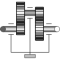

BevelGear1D1D gearbox with arbitrary shaft directions and 3-dim. bearing frame (3D dynamic effects are taken into account provided world.driveTrainMechanics3D=true) |

|
Diagram
{kind=link}
Information
This information is part of the Modelica Standard Library maintained by the Modelica Association.
This component is used to model a 1-dim. gearbox
with non-parallel axes (defined by parameters n_a, n_b).
A 3-dim. bearing frame is necessary to reflect the
correct support torque, as the axes of rotation of flange_a and
flange_b and the direction of the support torque vector
are different in general.
Note: The name BevelGear1D is kept only for simplicity. Regardless, this component could be used to model any kind of gearbox with non-parallel axes. For a usage example, see Examples.Rotational3DEffects.BevelGear1D.
Reference
Schweiger, Christian ;
Otter, Martin:
Modelling
3D Mechanical Effects of 1-dim. Powertrains. In: Proceedings of the 3rd International
Modelica Conference. Linköping : The Modelica Association and Linköping University,
November 3-4, 2003, pp. 149-158
Parameters (3)
Connectors (3)
Components (2)
Used in Examples (1)
|
Modelica.Mechanics.MultiBody.Examples.Rotational3DEffects Demonstrates the usage of a BevelGear1D model and how to calculate the power of such an element |